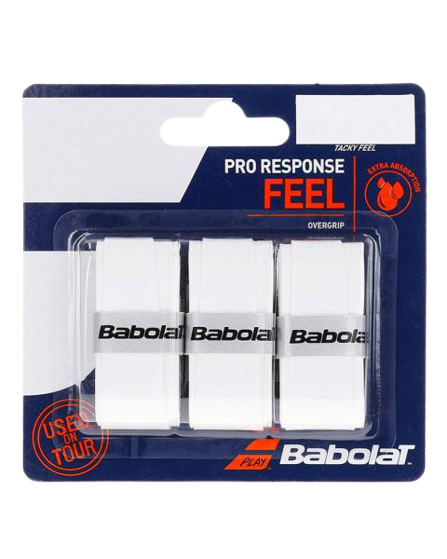

BABOLAT PRO RESPONSE

Caracteristicas:
- Mejora tu agarra a la pala y consigue mayor confort con los nuevos overgrips Babolat Pro Response X3 en color blanco, un accesorios de pádel pensado para los jugadores más exigentes. Fabricados con materiales 250% más absorbentes, cuentan con un grosor de 0.45 mm para mayor ligereza y comodidad. Son suaves al tacto.
Precio: 6.49€